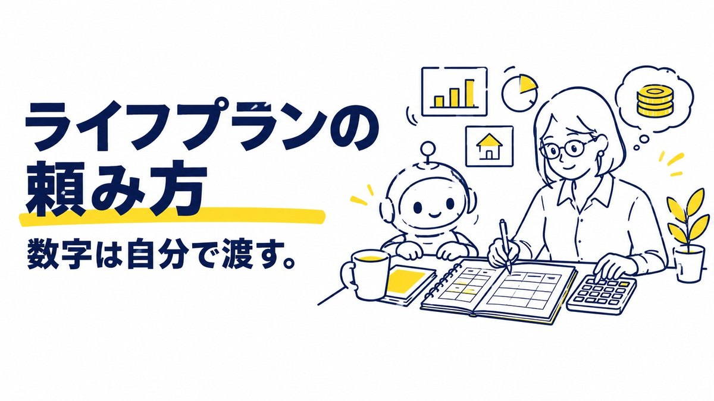
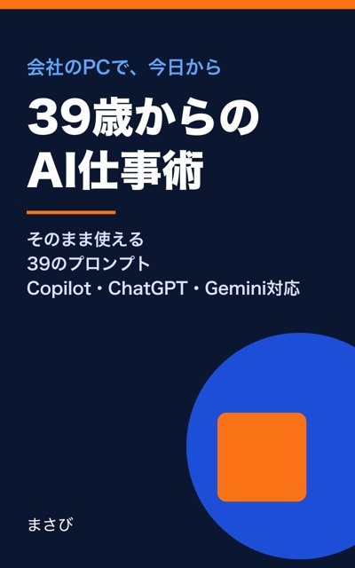

ChatGPT ライフプラン プロンプト（家計・教育費・老後の試算）｜数字は自分で渡し、考える順番だけ手伝ってもらう頼み方
※この記事はプロモーション（広告）を含みます

「このまま働いて、子どもの教育費も老後の備えも大丈夫なのかな」と、ふと不安になったことはありませんか。
ChatGPTのライフプランのプロンプトで大切なのは、数字は自分で渡し、AIには「表の作り方」と「考える順番」を手伝ってもらうことです。そうすると、頭の中のもやもやが、1枚の表に変わります。この記事では、そのまま使えるプロンプトを4つ紹介します。
この記事でわかること：家計・教育費・老後を整理するコピペ用プロンプト4つ、答えの読み方、うまくいかないときの直し方、専門家に相談する目安。結論は、AIの答えを「決める材料」ではなく「話し合いのたたき台」にすることです。
ChatGPTにライフプランを頼むときの考え方
ChatGPTは、文章や表を整理するのが得意です。一方で、将来の物価や金利、制度の細かい内容を、正確に言い当てることはできません。制度や税金は変わることがあり、AIが古い情報をもとに答える場合もあります。
そこで、役割を分けます。
| 役割 | 担当 | 例 |
|---|---|---|
| 数字を集める | あなた | 毎月の収入、支出、貯蓄、これからの予定 |
| 表にする・順番を決める | ChatGPT | 年ごとの表、確認する項目のリスト |
| 制度・税金・商品の判断 | 公式情報や専門家 | 国や自治体の案内、金融機関、ファイナンシャルプランナー |
この分け方なら、AIが間違えても、自分の数字は自分の手元で守れます。AIの答えを確かめる習慣は、AIの答えを見直すプロンプトでも紹介しています。
入力する前に：個人情報と社外秘は入れない
氏名、住所、勤務先の名前、口座番号、マイナンバー、保険証券の番号などは、入力しないでください。金額は「だいたいの数字」や、「月の手取り20万円台」のようなおおまかな書き方で十分です。会社の給与明細の画像を、そのまま貼ることも避けましょう。会社で使う場合は、会社の利用の決まりも先に確かめてください。
そのまま使えるプロンプト｜4つ
私も最初は「老後は大丈夫？」と一行だけ聞いて、ぼんやりした答えにつまずきがちでした。これはよくあるつまずきで、数字を渡して、頼み方を変えると、使える答えになります。【 】の部分を、自分の状況に書き換えてください。
1. 家計の棚卸し表を作ってもらう
家計の棚卸しをしたいので、次の質問を1つずつ私にしてください。私の答えをもとに、月ごとの収支の表を作ります。
1）毎月の手取りのおおまかな金額
2）毎月の固定の支出（住居・通信・保険など）
3）毎月の変動の支出（食費・日用品・レジャーなど）
質問は1回に1つだけにしてください。分からない項目は「不明」と書きます。
2. 教育費の考え方を、年ごとの表にする
教育費を考えるために、「入学や進級で、お金がまとまって必要になりそうな時期」を、年ごとの表にしてください。
金額は私が後から入れるので、空欄にしてください。表の列は「年」「子どもの年齢」「かかりそうなこと」「私が調べること」にしてください。
制度や金額は断言せず、「各自治体や学校の案内で確認してください」と添えてください。
3. 老後の備えを、確認する項目のリストにする
老後の備えについて、「いま自分で確認しておくとよい項目」を、チェックリストにしてください。
項目ごとに、1）なぜ確認するのか、2）どこで確認できるか（公式の窓口の種類）、を書いてください。
金額の予想や、特定の金融商品のおすすめは書かないでください。
4. 3つの場面で「困らない順番」を考える
数字は私が渡した範囲だけを使い、予想は書かないでください。
結果は、表で「場面」「見直す項目」「最初の小さな一歩」にしてください。
【ここに、おおまかな収支の数字を入れる】
数字を入れた後は、AIが出した計算を、電卓や表計算ソフトで見直すようにします。足し算や掛け算の途中で、数字がずれることがあるためです。表計算ソフトでの整理は、ExcelでAIに関数を頼むプロンプトも役に立ちます。
答えの読み方｜「決める」ではなく「話し合う」ために使う
出てきた表や項目は、家族や専門家と話し合うための、たたき台として使います。
- 家族と話すときは、表を見せながら「ここの数字を一緒に確かめたい」と切り出すと、責める雰囲気になりにくいです
- 気になる項目に印をつけて、「次に調べること」を3つだけ選びます
- 不安をあおる表現が出たら、「事実と予想を分けて書き直して」と頼みます
5年後の仕事を考えたいときは、ChatGPTの未来予測プロンプトも、あわせて使えます。
うまくいかないときの直し方
プロンプトの結果がしっくりこないときは、次の表から直し方を探してください。
| 困りごと | 直し方 |
|---|---|
| 答えが一般論ばかりになる | 家族の人数・年齢などの条件を、1つ足して頼み直す |
| 数字が合わない | 「計算の途中式も表にして」と頼み、自分で見直す |
| 断言が多くて不安になる | 「予想を書かず、事実と確認先だけ書いて」と頼む |
| 表が長すぎる | 「項目を5つまでに絞って」と頼む |
| 制度の話が古い気がする | 公式の案内を自分で開いて確かめる。AIには、確認の質問リストだけ作らせる |
向かない場面・注意点
このプロンプトは、整理には役立ちますが、次の場面には向きません。
- 具体的な金融商品や保険を選ぶ判断を、AIに任せること
- 税金や相続、住宅ローンなど、個別の事情で結論が変わる相談
- 家計の数字を、AIの答えだけを信じて決めること
こうした場面では、公的な窓口や、ファイナンシャルプランナーなどの専門家に相談することをおすすめします。AIには、「相談に行く前の質問リスト」を作ってもらうと、時間を有効に使えます。
気になる1冊の中身を、まずは試し読みで確かめてみませんか？

まとめ
| 場面 | やること | 目安 |
|---|---|---|
| 家計 | プロンプト1で、収支の表を作る | おおまかな金額で十分 |
| 教育費 | プロンプト2で、年ごとの表を作る | 金額は自分で調べて入れる |
| 老後 | プロンプト3で、確認する項目を出す | 予想は頼まない |
| 見直し | プロンプト4で、見直す順番を考える | 計算は自分で見直す |
AIを作る方々と、この記事を読んでくださったあなたに、ありがとうございます。
まずはプロンプト1だけ、今夜、5分でためしてみませんか。
あなたは、家計・教育費・老後のうち、いちばん気になっているのはどれですか？
最後まで読んでくださり、ありがとうございました。
気になったプロンプトを1つコピーして、今日の用事で1回だけ試してみませんか。空欄を埋めて送るだけで始められます。
あなたなら、何をAIに頼んでみますか？
この記事は下書きにAIを使い、内容は運営者が公式情報で確認しています。画像はAIで作成したイメージです。